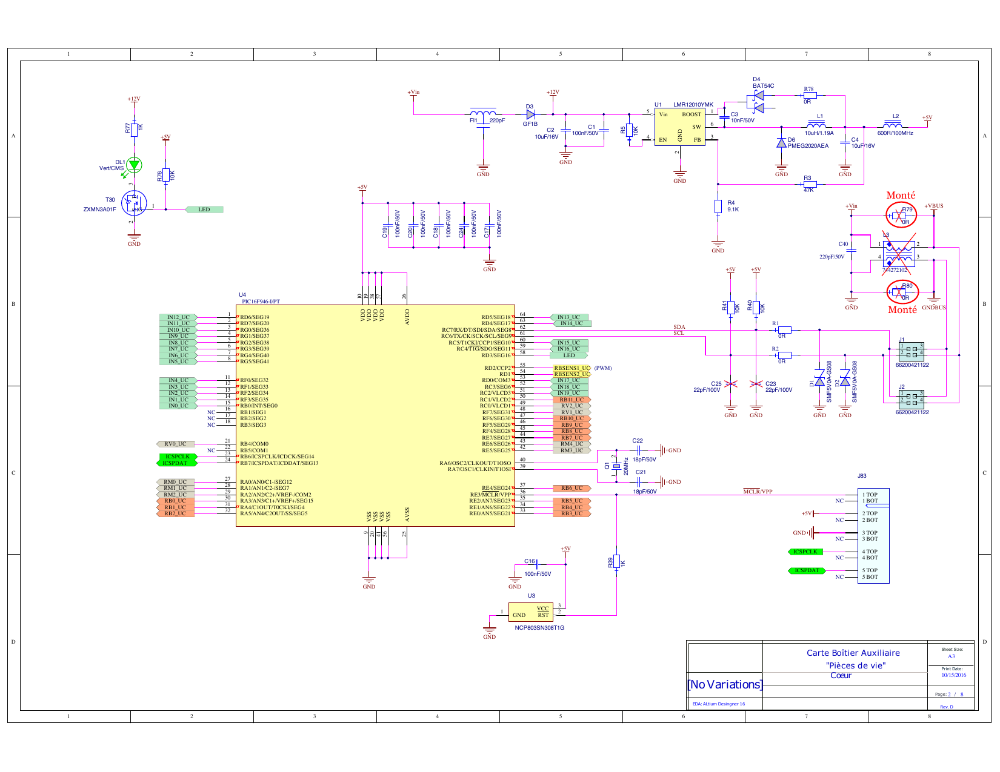

Vue d'ensemble de l'Architecture : Boîtier Essensys SC940D
1. Description Générale
Le SC940D est une unité centrale de contrôle ("Boîtier Pièce de Vie") conçue pour l'automatisation des bâtiments. Il agit comme une passerelle et un contrôleur d'actionneurs, gérant l'éclairage, les volets roulants et d'autres charges 230V via des relais embarqués.

2. Cœur de Traitement & Communication
Microcontrôleur (MCU)
- Composant: Microchip PIC16F946 (MCU CMOS 8-bit).
- Boîtier: 64-pin TQFP (
PIC16F946-I/PT). - Rôle: Gère la logique locale, les signaux de contrôle des relais, et s'interface avec le module de communication.
- Note: Le PIC16F946 possède un pilote LCD, mais il a probablement été choisi ici pour son grand nombre d'entrées/sorties (64 broches) ou pour des raisons d'historique composant.

Module de Communication ("Cœur")
- Composant: SC943-0C (Module Personnalisé).
- Empreinte:
SI943C_REV_A. - Description: Identifié comme une carte fille. Compte tenu de la nature du système, ce module gère probablement la communication RF (ex: LoRa, Zigbee, ou protocole propriétaire 868MHz).
- Interface: Connecté au PCB principal via des connecteurs headers.
3. Chaîne d'Alimentation
- Entrée: 12V DC (Nominale, fournie via connecteur).
- Régulateur Principal: LMR12010YMK (Texas Instruments).
- Type: Convertisseur DC-DC Step-down (Buck).
- Boîtier: SOT-23-6.
- Efficacité: Haute efficacité (>85%) comparée aux régulateurs linéaires, idéal pour minimiser l'échauffement dans un boîtier fermé.
- Protection:
- VDR1, VR2, VR3: Varistances (équivalent
VDR_S10K_275pour la suppression des transitoires sur le secteur/entrées. - SMF5V0A: Diodes TVS pour la protection ESD/Surtensions sur les lignes de signal basse tension.
- VDR1, VR2, VR3: Varistances (équivalent
4. Actionneurs & Interfaces
Sorties Relais
La carte dispose d'une haute densité de relais pour la commutation de charges : - Relais Haute Puissance: Série Finder 40.61 (16A, SPDT). Utilisés pour les charges principales. - Relais Compacts: Série Finder 34.51 (6A, Ultra-mince). Utilisés pour les canaux de faible puissance ou à espace contraint. - Pilotes: ZXMN3A01F (MOSFETs Canal-N) utilisés pour piloter les bobines des relais.
Connecteurs / Borniers
- Utilisation intensive de borniers PCB verticaux Phoenix Contact (série
FFKDS) pour le câblage terrain (Capteurs, Bus, Alimentation). - HE10 / IDC: Le connecteur
IDC2P54_26Pimplique une interface par câble nappe 26 broches, possiblement pour la programmation, l'extension ou la connexion en façade.
5. Technologie PCB
- Couches: Carte 4 Couches.
- L1 (Top): Signaux & Composants.
- L2 (G1): Plan de Masse Interne (GND) - Critique pour l'immunité au bruit.
- L3 (G2): Plan d'Alimentation Interne (VCC) - Probablement divisé pour 12V / 3.3V / 5V.
- L4 (Bottom): Signaux & composants secondaires.